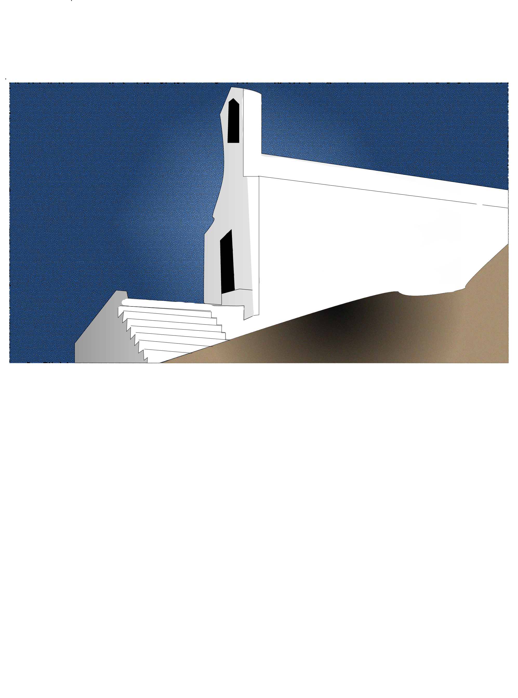

This is my illustrated environment. I chose this image of a Grecian church from wikimedia commons due to its beautiful simplicity. I felt like its geometry would make it well-suited for a transformation in illustrator. I used the pen tool to map the entire church and the land and the sky surrounding it. I used a slight gradient to color the shadows and then applied the "grain" and "mosaic" texturisations to the ground and the sky and colored in areas where need be with the paint tool. I used adobe color to pinpoint the correct hues from the source image.
Reference image:

Back to Home